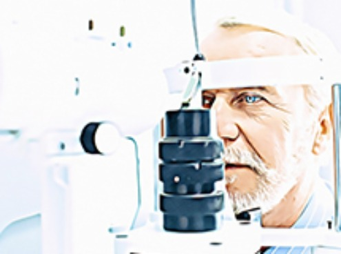
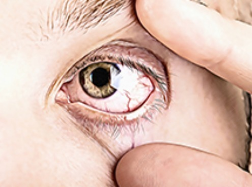
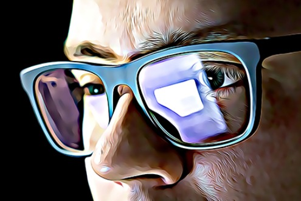
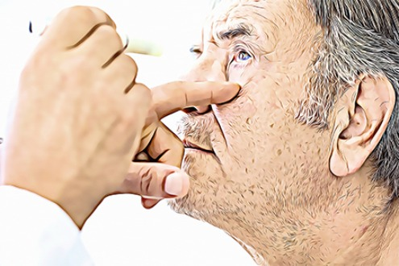
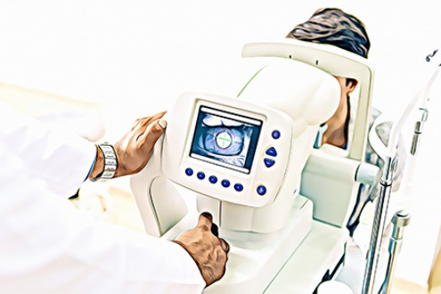

As we grow older, our vision deteriorates. We also become more prone to eye disease.
However, by taking proper care of our eyes, we can improve vision that has been damaged… And we can slow the progression of vision related problems.
Also, early treatment can prevent or reverse vision loss from age-related macular degeneration.
So in this article, we’ll look at 4 important things you can do to improve your vision.
Also, I highly recommend that you check out: This Highly Concentrated Toxin Is Killing Your Eyes.

This Highly Concentrated Toxin Is Killing Your Eyes.




4 Important Things That Improve Your Vision
1. Get regular eye exams
While this sounds obvious, the majority of people in the world do NOT get regular eye exams.
Early detection is the easiest way to stop or slow the progression of an eye-related problem and if you suspect you have a vision issue, then this could save you thousands of dollars in the long term if you go get your eyes checked out sooner rather than later.
Eye tests can also help identify other underlying health issues that may be the true cause of the vision problems (e.g. Diabetes).
2. Be careful around toxic chemicals, power tools and lawn mowing
When you mow the lawns, you get microscopic dust and lawn particles into your eyes.
Over the years this causes a cumulative damage effect, so make sure to wear glasses when doing this.
Similar applies to when using power tools. While you may not suffer an obvious eye problem due to an accident, that build up over time of dust and other materials does make a huge difference to your vision.
Also, be careful of the side effects of common household chemicals.
Wear gloves when using cleaning equipment, for example, so that you do not absorb harmful substances into your skin, that can also affect your eyes and other organs in the long term.
3. If you happen to smoke, then QUIT smoking
Smoking increases your risk for age-related macular degeneration and eye cancers.
If you're finding it difficult to quit on your own, talk with your doctor to develop a cessation plan that will work for you.
4. Eat a diet rich in Vitamins B, C and E, plus Zinc
Antioxidants, such as those contained in vitamins B, C, E and also in Zinc help protect your eyes from some of the effects of aging.
There are great food sources for these, which include strawberries, spinach, red peppers, sweet potatoes and more…
...However the best ‘all round’ source for those who need to be pedantic about having these minerals absorbed by their bodies daily is to take it in supplement form.
BONUS Tip (Very Important):
Take an eye supplement that contains lutein and zeaxanthin
Carotenoids such as lutein and zeaxanthin are mainly located in the center of the retina.
These absorb up to 90% of blue light. Without these, the eyes absorb too much blue light and leads to oxidative damage.